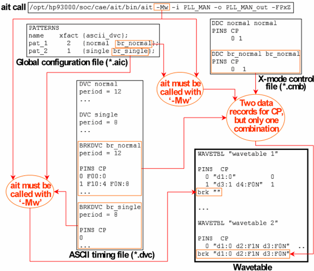

ASCII Break Device Cycles
Break waveforms are defined in the ASCII timing file with special ASCII device cycles, which are introduced by the keyword BRKDVC instead of the usual DVC. These break device cycles are associated with a pattern by specifying their name in the ascii_dvc column of the global configuration file in the same way as with ordinary ASCII device cycles. Only one break device cycle can be specified for any pattern. The ASCII break device cycle does not occur in the timing map file for the pattern.
The general syntax of the BRKDVC entries is the same as that of the standard ASCII device cycles; in particular, a period statement is mandatory. However, only one state character combination is admitted. If there is more than one, the others will be ignored, and in certain situations the timing translation will fail. For an x-mode factor 1 this means that only one data record is admitted. For an x-mode factor > 1 you must allow only one combination in the x-mode control file.
If ASCII device cycles with different periods are specified for the same pattern, and timing set changes are not allowed within the pattern (ctim = NCT) in the global configuration file, the tester period for the pattern will usually calculated as the greatest common divisor of all the ASCII periods (see The Input Columns). In this case the tester waveforms that result from splitting the ASCII waveforms of the BRKDVC statement accordingly must be all the same because only one break waveform is allowed per pin and wavetable. If this is not possible, the timing translation will fail.
The ASCII timing file can contain more than one BRKDVC statement, and different patterns can be connected to different BRKDVC statements in the global configuration file. But since a wavetable can only contain one break waveform per pin, this requires to call ait with the -Mw option in order that different wavetables be generated for the respective patterns (see ait command line parameters).
The following figure shows a timing setup with two wavetables and two different break waveforms for the pin CP, and also the creation of a single break waveform from two data records for an x-mode factor 2:

Note that when the ASCII dvc column is specified in the {vec_ascii_dvc ascii_dvc} format (see The Input Columns), then the break device cycle must also be specified as a pair. Thus if the ASCII device cycles in the above example were called norm and sing (instead of normal and single) in the ASCII vector files, the *.aic file would have to look as follows:
PATTERNS
name xfact {vec_ascii_dvc ascii_dvc};
pat_1 2 {norm normal br_normal br_normal};
pat_2 1 {sing single br_single br_single};